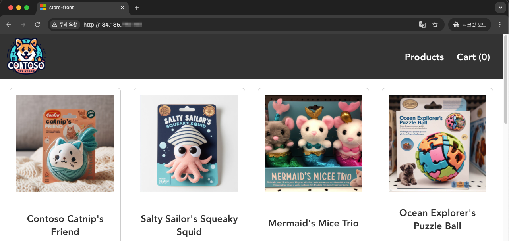

9.3 Azure AKS에서 OKE로 마이그레이션하기 (OCI Object Storage 사용)
이번에는 Azure AKS에서 OKE로 마이그레이션하는 과정입니다. AKS 상에서 사용하고 있는 애플리케이션이 있다는 가정하에 마이그레이션과정을 테스트 해보기 위해 aks-store-demo예제를 먼저 AKS에 배포 설정하고, Velero를 통해 OKE로 마이그레이션 해보겠습니다.
Azure Container Registry 준비
-
리소스 그룹을 생성합니다.
az group create --name myResourceGroup --location koreacentral -
ACR 인스턴스를 생성합니다. 이름은 Azure 내에서 유일해야 합니다. 무료 제공분에서 사용하기 위해 Standard 티어로 생성합니다.
-
무료 서비스
Azure service Description Free monthly amount Free period Container Registry Store and manage container images across all types of Azure deployments. 1 Standard tier registry with 100 GB storage and 10 webhooks 12 months
ACRNAME=mystoredemoacr az acr create --resource-group myResourceGroup --name $ACRNAME --sku Standard -
-
ACR에 로그인합니다.
az acr login --name ${ACRNAME} -
컨테이너 이미지를 ACR에 등록합니다.
docker pull --platform=linux/amd64 ghcr.io/azure-samples/aks-store-demo/product-service:latest docker pull --platform=linux/amd64 ghcr.io/azure-samples/aks-store-demo/order-service:latest docker pull --platform=linux/amd64 ghcr.io/azure-samples/aks-store-demo/store-front:latest docker tag ghcr.io/azure-samples/aks-store-demo/product-service:latest ${ACRNAME}.azurecr.io/aks-store-demo/product-service:latest docker tag ghcr.io/azure-samples/aks-store-demo/order-service:latest ${ACRNAME}.azurecr.io/aks-store-demo/order-service:latest docker tag ghcr.io/azure-samples/aks-store-demo/store-front:latest ${ACRNAME}.azurecr.io/aks-store-demo/store-front:latest docker push ${ACRNAME}.azurecr.io/aks-store-demo/product-service:latest docker push ${ACRNAME}.azurecr.io/aks-store-demo/order-service:latest docker push ${ACRNAME}.azurecr.io/aks-store-demo/store-front:latest -
결과를 확인합니다.
$ az acr repository list --name $ACRNAME --output table Result --------------- aks-store-demo/order-service aks-store-demo/product-service aks-store-demo/store-front
AKS 소스 클러스터 생성
AKS 서비스 권한설정
-
Azure Portal에서 Subscriptions 검색하여 이동합니다.
-
사용하는 Subscription을 클릭
-
Settings > Resource providers 클릭
-
Microsoft.ContainerService로 검색
-
NotRegistered 상태인 경우 Microsoft.ContainerService 선택후 Register를 클릭합니다.
-
잠깐 대기후 Registered 상태가 되면 다음 작업을 진행합니다.
AKS 소스 클러스터 생성
-
AKS 클러스터를 생성합니다.
- Free Trial Quota 기준 Total Regional vCPUs: 4 임.
az aks create \ --resource-group myResourceGroup \ --name myAKSCluster \ --node-count 2 \ --node-vm-size standard_d2s_v5 \ --generate-ssh-keys \ --attach-acr $ACRNAME -
다음 명령으로 kubeconfig를 생성합니다.
az aks get-credentials --resource-group myResourceGroup --name myAKSCluster -
연결 확인
$ kubectl get nodes NAME STATUS ROLES AGE VERSION aks-nodepool1-31595510-vmss000000 Ready <none> 5m10s v1.31.7 aks-nodepool1-31595510-vmss000001 Ready <none> 5m3s v1.31.7 -
샘플 애플리케이션의 manifest 파일을 배포합니다.
wget https://raw.githubusercontent.com/Azure-Samples/aks-store-demo/main/aks-store-all-in-one.yaml -
image 주소를 업데이트합니다.
containers: ... - name: order-service image: ${ACRNAME}.azurecr.io/aks-store-demo/order-service:latest ... - name: product-service image: ${ACRNAME}.azurecr.io/aks-store-demo/product-service:latest ... - name: store-front image: ${ACRNAME}.azurecr.io/aks-store-demo/store-front:latest ... -
샘플 애플리케이션을 배포합니다.
kubectl apply -f aks-store-all-in-one.yaml
Ingress 설정
Managed NGINX ingress with the application routing add-on을 참고하여, 설치합니다.
-
생성된 Service 타입을 변경합니다.
kubectl patch service store-front --type merge -p='{"spec":{"type": "ClusterIP"}}' kubectl patch service store-admin --type merge -p='{"spec":{"type": "ClusterIP"}}' -
현재 클러스터의 application routing을 활성화합니다.
az aks approuting enable --resource-group myResourceGroup --name myAKSCluster -
설치 결과를 확인합니다.
$ kubectl get deploy,svc -n app-routing-system NAME READY UP-TO-DATE AVAILABLE AGE deployment.apps/nginx 2/2 2 2 9m8s NAME TYPE CLUSTER-IP EXTERNAL-IP PORT(S) AGE service/nginx LoadBalancer 10.0.41.203 20.249.184.197 80:31860/TCP,443:30783/TCP 9m8s service/nginx-metrics ClusterIP 10.0.52.122 <none> 10254/TCP 9m8s -
다음 내용으로 Ingress 설정 파일을 생성합니다.
# ingress.yaml apiVersion: networking.k8s.io/v1 kind: Ingress metadata: name: store-front spec: ingressClassName: webapprouting.kubernetes.azure.com rules: - http: paths: - backend: service: name: store-front port: number: 80 path: / pathType: Prefix -
적용합니다.
kubectl apply -f ingress.yaml -
생성 결과를 확인합니다.
$ kubectl get ingress store-front NAME CLASS HOSTS ADDRESS PORTS AGE store-front webapprouting.kubernetes.azure.com * 20.249.184.197 80 26s -
웹 브라우저로 해당 주소가 접속되는 지 확인해 봅니다.
Storage
-
설치된 Storage Class를 확인합니다. 이미 기본 설치되어 있습니다. 여기서 managed-csi를 사용하도록 하겠습니다.
$ kubectl get sc NAME PROVISIONER RECLAIMPOLICY VOLUMEBINDINGMODE ALLOWVOLUMEEXPANSION AGE azurefile file.csi.azure.com Delete Immediate true 96m azurefile-csi file.csi.azure.com Delete Immediate true 96m azurefile-csi-premium file.csi.azure.com Delete Immediate true 96m azurefile-premium file.csi.azure.com Delete Immediate true 96m default (default) disk.csi.azure.com Delete WaitForFirstConsumer true 96m managed disk.csi.azure.com Delete WaitForFirstConsumer true 96m managed-csi disk.csi.azure.com Delete WaitForFirstConsumer true 96m managed-csi-premium disk.csi.azure.com Delete WaitForFirstConsumer true 96m managed-premium disk.csi.azure.com Delete WaitForFirstConsumer true 96m
영구볼륨을 사용하는 MongoDB 배포하기
-
배포할 YAML 파일입니다. storageClass로 managed-csi를 사용하여 영구볼륨을 요청하게 됩니다.
# statefulset-mongodb.yaml apiVersion: apps/v1 kind: StatefulSet metadata: name: mongodb spec: serviceName: mongodb replicas: 1 selector: matchLabels: app: mongodb template: metadata: labels: app: mongodb spec: nodeSelector: "kubernetes.io/os": linux containers: - name: mongodb image: mcr.microsoft.com/mirror/docker/library/mongo:4.2 ports: - containerPort: 27017 name: mongodb resources: requests: cpu: 5m memory: 75Mi limits: cpu: 25m memory: 1024Mi livenessProbe: exec: command: - mongosh - --eval - db.runCommand('ping').ok initialDelaySeconds: 5 periodSeconds: 5 volumeMounts: - name: mongodb-data mountPath: "/data/db" readOnly: false volumes: - name: mongodb-data persistentVolumeClaim: claimName: pvc-mongodb --- apiVersion: v1 kind: Service metadata: name: mongodb spec: ports: - port: 27017 selector: app: mongodb type: ClusterIP --- apiVersion: v1 kind: PersistentVolumeClaim metadata: name: pvc-mongodb spec: accessModes: - ReadWriteOnce resources: requests: storage: 10Gi storageClassName: managed-csi -
적용하여 MongoDB 컨테이너를 생성합니다.
kubectl apply -f statefulset-mongodb.yaml -
catalog 컨테이너가 정상 기동하는 지 확인합니다.
$ kubectl get pod -lapp=mongodb NAME READY STATUS RESTARTS AGE mongodb-0 1/1 Running 0 31s -
이후 마이그레이션시 영구볼륨도 함께 마이그레이션 되는 지 확인하기 위해 흔적을 남깁니다.
$ kubectl exec mongodb-0 -- bash -c "echo 'AKS to OKE Migration with PVC attached ' > /data/db/my-log.txt" $ kubectl exec mongodb-0 -- bash -c "cat /data/db/my-log.txt" AKS to OKE Migration with PVC attached
Velero 설치준비
설치를 위해 작업환경에 velero CLI를 설치하고, 백업 파일을 저장한 S3 또는 S3 호환 오브젝트 스토리지가 필요합니다. 제일아래 참고에서 설명하듯이, OCI Object Storage와 S3를 혼용해서 사용할 때 이슈가 발생하여, 일단은 OCI Object Storage 하나를 사용하여 테스트를 마무리하였습니다.
OCI Object Storage Bucket 만들기
10.1 Velero로 백업, 복구하기을 참고하여, OCI Object Storage Bucket을 생성합니다.
- Bucket Name: 예, oci-bucket-velero-20250414
Velero 다운로드
가이드에 따라 CLI를 설치합니다. 이전 장에서 이미 설치한 경우 그대로 사용합니다.
-
설치 확인
$ velero version Client: Version: v1.15.2 Git commit: - ...
AKS 소스 클러스터에 Velero 설치하기
백업할 대상 클러스터에 Velero 서버 모듈을 설치해야 합니다.
-
현재 kubectl로 AKS 소스 클러스터에 연결된 상태임을 확인합니다.
$ kubectl config get-contexts -
다음 명령 형식으로 설치합니다. 여기서는 velero-plugin-for-aws는 1.8.2 버전을 설치합니다.
- OBJECT_STORAGE_NAMESPACE: OCI Object Storage를 사용하기 위한 네임스페이스값입니다.
NAMESPACE=<OBJECT_STORAGE_NAMESPACE> velero install \ --provider aws \ --bucket oci-bucket-velero-20250414 \ --use-volume-snapshots=false \ --secret-file ./velero-credentials-for-oci \ --plugins velero/velero-plugin-for-aws:v1.8.2 \ --backup-location-config region=ap-chuncheon-1,s3ForcePathStyle="true",s3Url=https://${NAMESPACE}.compat.objectstorage.ap-chuncheon-1.oraclecloud.com \ --use-node-agent -
설치 결과를 확인합니다.
$ kubectl get deployment -n velero NAME READY UP-TO-DATE AVAILABLE AGE velero 1/1 1 1 19s -
OCI Object Storage Bucket 연결이 잘 되었다면, 아래 명령결과 PHASE=Available이 됩니다.
$ velero backup-location get NAME PROVIDER BUCKET/PREFIX PHASE LAST VALIDATED ACCESS MODE DEFAULT default aws oci-bucket-velero-20250414 Available 2025-04-21 10:03:06 +0900 KST ReadWrite true
AKS 소스 클러스터 백업하기
-
백업할 자원 확인하기 - 현재 배포한 retail-store-sample-app은 모두 default 네임스페이스에 있습니다.
$ kubectl get ns NAME STATUS AGE app-routing-system Active 8h default Active 10h kube-node-lease Active 10h kube-public Active 10h kube-system Active 10h velero Active 75s $ kubectl get all -n default NAME READY STATUS RESTARTS AGE pod/makeline-service-586bb769df-zt4gx 1/1 Running 1 (49m ago) 50m pod/mongodb-0 1/1 Running 0 28m ... -
Velero로 default 네임스페이스를 볼륨포함해서 백업하고 결과를 확인합니다.
velero backup create aks-source-cluster --include-namespaces default --default-volumes-to-fs-backup velero backup describe aks-source-cluster --details-
실행 예시
- v1/PersistentVolumeClaim, v1/PersistentVolume가 백업되고, Pod Volume Backups도 함께 백업되었습니다.
$ velero backup create aks-source-cluster --include-namespaces default --default-volumes-to-fs-backup Backup request "aks-source-cluster" submitted successfully. Run `velero backup describe aks-source-cluster` or `velero backup logs aks-source-cluster` for more details. $ velero backup describe eks-source-cluster --details Name: aks-source-cluster ... Phase: Completed ... Total items to be backed up: 169 Items backed up: 169 Resource List: apps/v1/ControllerRevision: - default/mongodb-67b9cc44bc - default/mongodb-bb7d4b4f6 - default/rabbitmq-76886c5866 apps/v1/Deployment: - default/makeline-service - default/order-service - default/product-service - default/store-admin - default/store-front - default/virtual-customer - default/virtual-worker apps/v1/ReplicaSet: ... v1/PersistentVolume: - pvc-c8caf3cd-9a90-44af-8ad7-fae2391d4c0b v1/PersistentVolumeClaim: - default/pvc-mongodb ... Backup Volumes: Velero-Native Snapshots: <none included> CSI Snapshots: <none included> Pod Volume Backups - kopia: Completed: default/mongodb-0: mongodb-data HooksAttempted: 0 HooksFailed: 0
-
-
백업이 완료되었습니다.
$ velero get backup NAME STATUS ERRORS WARNINGS CREATED EXPIRES STORAGE LOCATION SELECTOR aks-source-cluster Completed 0 0 2025-04-21 10:05:34 +0900 KST 29d default <none>
OKE 타켓 클러스터 준비
OCI Native Ingress Controller 설치하기
EKS 소스 클러스터에 사용하던 ALB Ingress Controller를 OKE에서 OCI Native Ingress Controller로 마이그레이션한다고 하면, 먼저 타켓 클러스터에 OCI Native Ingress Controller 설치가 필요합니다. 가이드에 따라 설치합니다.
참고 - 1.2.2.1.1 OCI Native Ingress Controller 설치하기
Velero 설치하기
10.1 Velero로 백업, 복구하기를 참고하여, OKE 타켓 클러스터에 Velero 설치합니다.
-
현재 kubectl로 OKE 소스 클러스터에 연결된 상태임을 확인합니다.
-
다음 명령 형식으로 설치합니다. 여기서는 velero-plugin-for-aws는 1.8.2 버전을 설치합니다.
NAMESPACE=<OBJECT_STORAGE_NAMESPACE> velero install \ --provider aws \ --bucket oci-bucket-velero-20250414 \ --use-volume-snapshots=false \ --secret-file ./velero-credentials-for-oci \ --plugins velero/velero-plugin-for-aws:v1.8.2 \ --backup-location-config region=ap-chuncheon-1,s3ForcePathStyle="true",s3Url=https://${NAMESPACE}.compat.objectstorage.ap-chuncheon-1.oraclecloud.com \ --use-node-agent -
OCI Object Storage Bucket 연결이 잘 되었다면, 아래 명령결과 PHASE=Available이 됩니다.
$ velero backup-location get NAME PROVIDER BUCKET/PREFIX PHASE LAST VALIDATED ACCESS MODE DEFAULT default aws oci-bucket-velero-20250414 Available 2025-04-21 10:30:04 +0900 KST ReadWrite true -
백업이 조회되는 지 확인해 봅니다.
$ velero get backup NAME STATUS ERRORS WARNINGS CREATED EXPIRES STORAGE LOCATION SELECTOR aks-source-cluster Completed 0 0 2025-04-21 10:05:34 +0900 KST 29d default <none>
마이그레이션 준비
컨테이너 이미지 마이그레이션
기존에 사용하던 컨테이너 이미지 레지스트리도 이관한다고 하면, 새 컨테이너 이미지 레지스트리로 사용중인 이미지들을 옮겨야 합니다. 이후에는 이미지 빌드 프로세스상에서 타켓을 새 이미지 레지스트리로 변경이 필요합니다. 아래는 현재 이미지를 옮기는 간단한 예시입니다.
-
아래 두 레지스트리에 접근이 가능한 위치에서 docker pull, tag, push 순서로 ECR에서 OCIR로 이미지 등록하는 예시입니다. 다른 이미지들도 동일한 방식으로 진행할 수 있습니다.
ACRNAME=mystoredemoacr docker pull --platform=linux/amd64 ${ACRNAME}.azurecr.io/aks-store-demo/product-service:latest docker pull --platform=linux/amd64 ${ACRNAME}.azurecr.io/aks-store-demo/order-service:latest docker pull --platform=linux/amd64 ${ACRNAME}.azurecr.io/aks-store-demo/store-front:latest NAMESPACE=<OBJECT_STORAGE_NAMESPACE> docker tag ${ACRNAME}.azurecr.io/aks-store-demo/product-service:latest yny.ocir.io/${NAMESPACE}/aks-store-demo/product-service:latest docker tag ${ACRNAME}.azurecr.io/aks-store-demo/order-service:latest yny.ocir.io/${NAMESPACE}/aks-store-demo/order-service:latest docker tag ${ACRNAME}.azurecr.io/aks-store-demo/store-front:latest yny.ocir.io/${NAMESPACE}/aks-store-demo/store-front:latest docker push yny.ocir.io/${NAMESPACE}/aks-store-demo/product-service:latest docker push yny.ocir.io/${NAMESPACE}/aks-store-demo/order-service:latest docker push yny.ocir.io/${NAMESPACE}/aks-store-demo/store-front:latest
Velero 복구 준비
Velero로 백업파일을 사용하여 복구시 주소, 설정값 등의 변경이 필요합니다. Velero에서는 Image와 StorageClass 변경을 제공하고, 추가로 일반적인 값 변경을 위해 Resource Modifier을 제공합니다. 이 세가지를 이용해 샘플 앱을 이관시 변경되도록 설정해 봅니다.
-
먼저 백업 복구시 이미지 주소 변경을 위한 설정파일을 준비합니다.
NAMESPACE=<OBJECT_STORAGE_NAMESPACE> cat > change-image-name-config.yaml <<EOF apiVersion: v1 kind: ConfigMap metadata: name: change-image-name-config namespace: velero labels: velero.io/plugin-config: "" velero.io/change-image-name: RestoreItemAction data: case1: "${ACRNAME}.azurecr.io,yny.ocir.io/${NAMESPACE}" EOF -
PV/PVC를 위한 StorageClass 변경을 위한 설정파일을 준비합니다.
cat > change-storage-class-config.yaml <<EOF apiVersion: v1 kind: ConfigMap metadata: name: change-storage-class-config namespace: velero labels: velero.io/plugin-config: "" velero.io/change-storage-class: RestoreItemAction data: # add 1+ key-value pairs here, where the key is the old # storage class name and the value is the new storage # class name. managed-csi: oci-bv EOF -
Image와 StorageClass 외에 Resource Modifier를 사용한 일반적인 변경을 위한 설정파일을 준비합니다. ALB Ingress Controller에서 OCI Native Ingress Controller로 변경으로 필요한 Ingress의 class 변경 및 annotation을 삭제, 신규 추가합니다.
cat > resource-modifier-ingress.yaml <<EOF version: v1 resourceModifierRules: - conditions: groupResource: ingresses.networking.k8s.io resourceNameRegex: ".*" patches: - operation: replace path: "/spec/ingressClassName" value: "native-ic-ingress-class" EOF -
설정을 배포합니다.
kubectl apply -f change-storage-class-config.yaml kubectl apply -f change-image-name-config.yaml kubectl delete cm resource-modifier-ingress-config -n velero kubectl create cm resource-modifier-ingress-config --from-file resource-modifier-ingress.yaml -n velero
클러스터 복구하기
-
먼저 앞서 백업한 내용이 현재 Velero에서 조회되는지 확인합니다.
$ velero get backup NAME STATUS ERRORS WARNINGS CREATED EXPIRES STORAGE LOCATION SELECTOR aks-source-cluster Completed 0 0 2025-04-21 10:05:34 +0900 KST 29d default <none> -
Resource Modifier와 백업을 이용하여 복구를 수행합니다.
- OKE 이관후 필요없는 자원, 상위 자원 배포시 자동생성되는 자원은 제외하였습니다. 각 케이스에 따라 달라질 수 있습니다.
- Pod의 경우는 복구 자원에 꼭 추가하여 실제 볼륨 복구가 됩니다.
velero restore create --from-backup aks-source-cluster --resource-modifier-configmap resource-modifier-ingress-config \ --include-resources Deployment,StatefulSet,Ingress,ConfigMap,Pod,PersistentVolume,PersistentVolumeClaim,Service,ServiceAccount-
실행결과
$ velero restore create --from-backup aks-source-cluster --resource-modifier-configmap resource-modifier-ingress-config \ --include-resources Deployment,StatefulSet,Ingress,ConfigMap,Pod,PersistentVolume,PersistentVolumeClaim,Service,ServiceAccount Restore request "aks-source-cluster-20250421121154" submitted successfully. Run `velero restore describe aks-source-cluster-20250421121154` or `velero restore logs aks-source-cluster-20250421121154` for more details -
–details 상세실행 결과를 조회하면, 자원 단위 생성, 실패 또는 스킵한 것을 확인할 수 있습니다. kopia Restores 항목이 있어야 영구 볼륨이 복구된 것입니다.
$ velero restore describe aks-source-cluster-20250421121154 --details Name: aks-source-cluster-20250421121154 ... Resources: Included: Deployment, StatefulSet, Ingress, ConfigMap, Pod, PersistentVolume, PersistentVolumeClaim, Service, ServiceAccount Excluded: nodes, events, events.events.k8s.io, backups.velero.io, restores.velero.io, resticrepositories.velero.io, csinodes.storage.k8s.io, volumeattachments.storage.k8s.io, backuprepositories.velero.io Cluster-scoped: auto ... Restore PVs: auto kopia Restores: Completed: default/mongodb-0: mongodb-data ... Resource List: apps/v1/Deployment: ... v1/PersistentVolume: - pvc-c8caf3cd-9a90-44af-8ad7-fae2391d4c0b(skipped) v1/PersistentVolumeClaim: - default/pvc-mongodb(created) v1/Pod: ... - default/mongodb-0(created) ...
-
복구된 컨테이너의 영구 볼륨 복구 확인
$ kubectl exec mongodb-0 -- bash -c "cat /data/db/my-log.txt" Defaulted container "mongodb" out of: mongodb, restore-wait (init) AKS to OKE Migration with PVC attached -
복구된 컨테이너들의 이미지들을 모두 조회해 보면, 앞선 change-image-name-config에 의해 이미지 주소가 모두 변경된 것을 알 수 있습니다.
$ kubectl get pods -o jsonpath="{.items[*].spec['initContainers', 'containers'][*].image}" |\ tr -s '[[:space:]]' '\n' |\ sort |\ uniq -c 2 busybox 1 ghcr.io/azure-samples/aks-store-demo/makeline-service:latest 1 ghcr.io/azure-samples/aks-store-demo/store-admin:latest 1 ghcr.io/azure-samples/aks-store-demo/virtual-customer:latest 1 ghcr.io/azure-samples/aks-store-demo/virtual-worker:latest 1 mcr.microsoft.com/mirror/docker/library/mongo:4.2 1 mcr.microsoft.com/mirror/docker/library/rabbitmq:3.10-management-alpine 1 velero/velero-restore-helper:v1.15.2 2 yny.ocir.io/demo01/aks-store-demo/order-service:latest 2 yny.ocir.io/demo01/aks-store-demo/product-service:latest 2 yny.ocir.io/demo01/aks-store-demo/store-front:latest -
PVC의 StorageClass가 앞선 change-storage-class-config에 의해 oci-bv로 변경된 것을 알 수 있습니다.
$ kubectl get pvc NAME STATUS VOLUME CAPACITY ACCESS MODES STORAGECLASS VOLUMEATTRIBUTESCLASS AGE pvc-mongodb Bound csi-97ccc94b-793c-47b7-bb1a-9364da03265c 50Gi RWO oci-bv <unset> 3m9s -
Ingress의 ingressClassName이 변경된 것을 알 수 있습니다.
$ kubectl get ingress -n default-23 -o yaml apiVersion: v1 items: - apiVersion: networking.k8s.io/v1 kind: Ingress metadata: ... name: store-front ... spec: ingressClassName: native-ic-ingress-class rules: ... -
이관된 Ingress 주소로 접속해 봅니다.
- 접속이 안되는 경우, Load Balancer의 Backend Set 헬스체크와 Security Rule에서 포트 오픈 여부를 확인합니다.
$ kubectl get ingress NAME CLASS HOSTS ADDRESS PORTS AGE store-front native-ic-ingress-class * 134.185.xxx.xxx 80 5m24s
이 글은 개인으로서, 개인의 시간을 할애하여 작성된 글입니다. 글의 내용에 오류가 있을 수 있으며, 글 속의 의견은 개인적인 의견입니다.